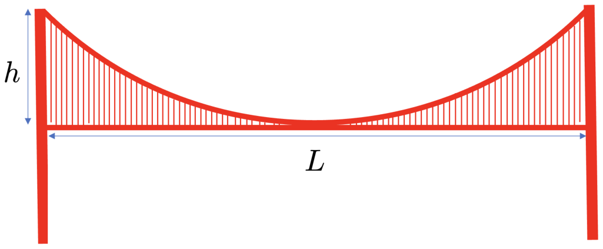

이 문제의 목표는 현수교(suspension bridge)의 여러 가지 성질을 분석하는 것이다. 현수교는 수직 행어(vertical suspender)를 사용하여 상판(deck)을 휘어진 현수 케이블(suspension cable) 아래에 매단 형태의 다리이다.

다리를 모형화하기 위해 다음을 가정한다.
• 현수 케이블은 두 개이며, 장력은 두 케이블에 똑같이 분배된다. 현수 케이블의 무게는 상판의 무게보다 훨씬 작으며, 상판의 단위 길이당 밀도는 $\lambda$이다.
• a) – c)에서는 수직 행어의 무게를 무시할 수 있다고 가정한다. d)에서는 그렇게 가정하지 않는다.
• 상판의 무게는 많은 수의 수직 행어가 균일하게 지탱하며, 이웃한 행어 사이의 거리는 다리의 길이보다 훨씬 작다.
• 상판은 완전히 수평이다.
• 현수 케이블은 두 탑 사이의 길이에 걸쳐 있다.
• 현수 케이블의 가장 낮은 점은 상판과 같은 수직 위치에 있다.
다음을 구하라.
a) 현수 케이블의 모양을 나타내는 방정식 $y(x)$를 구하라. 최종 결과는 세 개의 상수에 의존할 수 있으며, 문제의 이 부분에서는 그 상수들을 정하지 않은 채로 두어도 된다.
b) 다리의 두 탑이 (현수 상판 위로) 같은 높이 $h$를 가지며, 두 탑 사이 상판의 길이가 $L$이라고 가정하자. $y=0$이 상판의 높이이고 $x=0$이 상판의 가운데라고 할 때, 현수 케이블의 모양 $y(x)$를 오직 $L$과 $h$만으로 나타내라.
c) 현수 케이블의 최대 장력을 다리의 높이 $h$, 다리의 길이 $L$, 단위 길이당 밀도 $\lambda$, 중력 가속도 $g$로 나타내라. 최대 장력은 어디에서 나타나는가? $L$이 고정되었을 때 이 최대 장력을 높이 $h$의 함수로 개략적으로 그려라. 장력이 최대가 되는 탑의 높이 $h_{\max}$는 얼마이며, 장력이 최소가 되는 높이 $h_{\min}$은 얼마인가?
d) 수직 행어들의 전체 무게는 처음에는 상판의 무게보다 훨씬 작다. 그러나 재건 공사 후에 행어들이 보강되어 그 무게를 더 이상 무시할 수 없게 되었다. 새 행어들은 단단한 금속 막대이므로, 현수 케이블의 모양은 변하지 않는다고 가정해도 된다. 단위 길이당 행어의 전체 개수가 $n$이고, 행어의 단위 길이당 질량이 $w$($w\ll\lambda$)라고 가정하자. 현수선의 새로운 최대 장력은 얼마인가? 현수 케이블의 최대 장력이 최소가 되려면 두 탑의 높이 $h_{\min}^{\text{new}}$는 얼마여야 하는가?
출제: Luca Victor Iliesiu, Stanford University
현수 케이블이 수평이 되는 부분에서의 장력을 $T_0$, 그 점의 좌표를 $x_0$라 하자. 어떤 위치 $x$(일반성을 잃지 않고 $x>x_0$라 하자)에서 케이블의 장력을 $T$라 하고, 그 점에서 케이블이 수평축과 이루는 각을 $\phi$라 하면 $\tan\phi=dy/dx$이다. 점 $x_0$와 $x$ 사이에 있는 상판의 전체 무게는 $G=\lambda g(x-x_0)$이다. 장력과 중력을 같게 놓으면
\[2T\cos\phi=2T_0\,,\qquad 2T\sin\phi=\lambda g(x-x_0)\,.\]을 얻는다. 여기서 인수 2는 평행한 현수 케이블이 2개 있기 때문에 생긴다. $T$를 소거하기 위해 두 식의 비를 취하면
\[\frac{dy}{dx}=\frac{\lambda g}{2T_0}(x-x_0)\,,\]이고, 그 해는
\[y(x)=A(x-x_0)^2+B\,,\]로 주어진다. 여기서 $A$와 $B$는 미지수이다. $A$는
\[A=\frac{\lambda g}{4T_0}\,,\]로 주어지고, $B$는 적분 상수이다.
위의 식에서 $x_0=0$이고 $y(x=0)=0$이므로 $B=0$이다. 다리 탑의 꼭대기에서는
\[h=A\frac{L^2}{4}\,,\]이므로 $A=\dfrac{4h}{L^2}$이다. 따라서
이로써 $T_0=\dfrac{\lambda gL^2}{16h}$도 정해진다.
위의 처음 두 식을 제곱하여 위치 $x$에서 장력의 크기를
\[T^2=T_0^2+\frac{(\lambda gx)^2}{4}\,,\]로 쓸 수 있으며, 이는 다음과 같이 간단히 할 수 있다.
\[T=\frac{\lambda g}{2}\sqrt{\left(\frac{L^2}{8h}\right)^2+x^2}\,.\]이것은 $x$에 대한 단조 증가 함수이므로, 최대 장력은 항상 다리의 양 끝 $x=\pm L/2$에서 나타난다. 그곳에서 장력의 크기는
이것은 ($h>0$에 대해) $h$의 단조 감소 함수이다. 따라서 최댓값은 $h_{\max}=0$에서 나타나며 이때 $T\to\infty$이고, 최솟값은 $h_{\min}\to\infty$일 때 나타나며 이때 $T=\dfrac{\lambda gL}{4}$이다. $h_{\min}\to\infty$일 때 현수 케이블은 거의 수직이며, 네 끝에서의 장력의 합이 다리의 무게와 같다. 즉 $4T=\lambda gL$이며, 이는 좋은 일관성 검사가 된다.
$x=0$과 어떤 점 $x$(이번에도 $x>0$) 사이 구간에 추가로 작용하는 중력은
\[G_{\text{corr}}=\int dx\,wngy=\frac{4wngh}{3L^2}x^3\,.\]이다. 앞의 결과로부터
\[\cos\phi=\frac{L^2}{8h\sqrt{\left(\frac{L^2}{8h}\right)^2+x^2}}\,,\qquad\sin\phi=\frac{8hx}{\sqrt{L^4+64h^2x^2}}\,.\]임을 보았다. 이제 힘의 평형으로부터
\[T=\frac{\lambda g}{2}\sqrt{\left(\frac{L^2}{8h}\right)^2+x^2}\left(1+\frac{4hwn}{3\lambda L^2}x^2\right)\,.\]이다. 이번에도 최댓값은 $x=\pm L/2$에서 나타나므로
이 함수는 더 이상 $h$의 단조 감소 함수가 아니다. 그 최솟값은 $\partial T_{\max}/\partial h=0$으로 주어지며, 그 결과는
이다. $w\to0$일 때 $h_{\min}^{\text{new}}\to\infty$이며, 이는 앞의 결과와 일치한다는 점에 주목하라. 따라서 현수 케이블(원문 표현이며, 실제로는 수직 행어)의 추가 무게를 고려하는 이 더 현실적인 다리 모형에서는 탑의 높이가 유한한 값으로 보정됨을 알 수 있다.